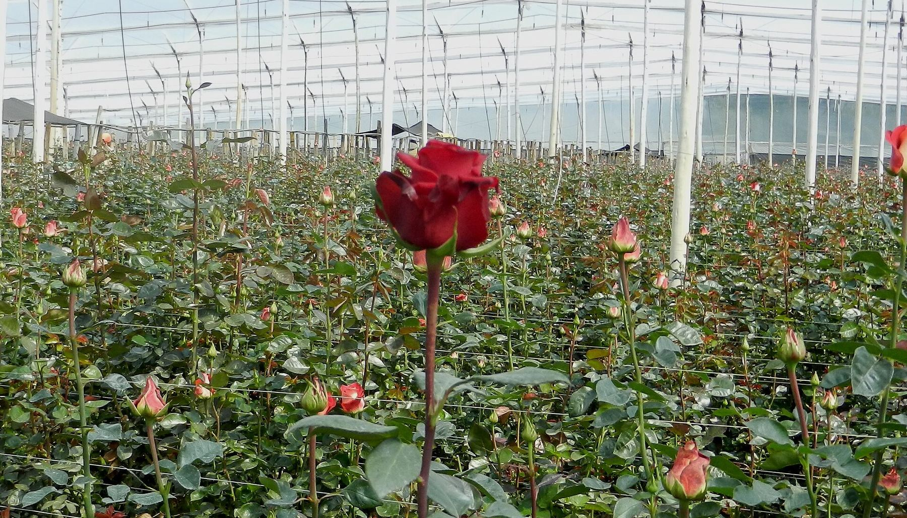

Diagnóstico de oficina
Vamos a la finca, vemos cómo llegan y cómo se cargan sus pedidos y documentos, y le entregamos por escrito qué conviene automatizar primero y qué no vale la pena.
Primer paso
Consultoría de datos e IA para florícolas de Cayambe, Tabacundo y Cotopaxi. Trabajamos sobre el sistema que usted ya tiene.

En la oficina de una exportadora o de una consolidadora, las mismas cifras se escriben dos y tres veces. Ahí se va el día y ahí aparecen los errores.
Empezamos por lo que más tiempo le quita a su oficina. Nada se reemplaza: todo termina en el sistema que ya usa.
Vamos a la finca, vemos cómo llegan y cómo se cargan sus pedidos y documentos, y le entregamos por escrito qué conviene automatizar primero y qué no vale la pena.
Primer paso
Los pedidos de sus clientes, lleguen como lleguen, se leen solos, se revisan contra su catálogo de variedades y largos, y quedan listos para cargar en Komet, Unosof, AS2 o su Excel.
Exportadoras · Probar la demo
Facturas de proveedores, recepciones y liquidaciones: se leen, se revisan RUC, sumas e IVA, y lo que no cuadra queda marcado antes de pagar o de cerrar la liquidación.
Exportadoras y consolidadoras
Análisis de costos por variedad y bloque, y control de cartera por cliente, con los datos que ya tiene en sus sistemas y en sus Excel.
En la demo, suba un pedido de ejemplo: un correo en inglés, un WhatsApp desordenado o un Excel. Fuyu lo lee, lo revisa contra el catálogo y le deja una tabla para corregir y aprobar.
Tiempos de ejemplo, solo ilustrativos: no son una medición en una finca.
“Pink Moonlight” no existe en el catálogo de la finca.
Fuyu está en Cayambe y trabaja con florícolas de Cayambe, Tabacundo y Cotopaxi: vamos a la finca y conversamos con quien hace el trabajo. No reemplazamos su sistema: todo termina en Komet, Unosof, AS2 o el Excel que ya usa. Una persona revisa y aprueba cada pedido o documento antes de cargar nada. Y antes de ver un solo papel suyo, firmamos confidencialidad por escrito.
Una conversación por WhatsApp o en su finca para ver qué le quita más tiempo a su oficina.
Escribir por WhatsApp